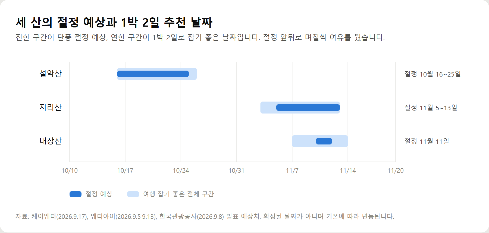
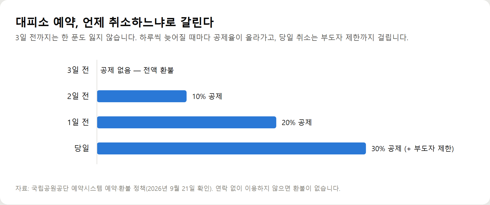

<meta charset="utf-8">
<title>단풍 1박 2일 코스 — 나의 투자 그리고 행복한 여행</title>
<meta name="description" content="설악산·내장산·지리산 단풍 1박 2일 코스를 일정표로 정리했습니다. 절정 예상 날짜와 예약이 필요한 곳, 케이블카 요금과 대피소 예약 규정까지 확인된 자료만 담았습니다.">
<meta name="viewport" content="width=device-width, initial-scale=1">
<link rel="canonical" href="https://worldtraveler1.tistory.com/101">
<link rel="preconnect" href="https://fonts.googleapis.com">
<link rel="preconnect" href="https://fonts.gstatic.com" crossorigin>
<link rel="stylesheet" href="https://fonts.googleapis.com/css2?family=Hahmlet:wght@400;600;800&family=IBM+Plex+Mono:wght@400;500&family=IBM+Plex+Sans+KR:wght@300;400;500;600&display=swap">

<style>
  :root{
    --paper:#F2EEE6;--surface:#FAF8F3;--surface-2:#E7E1D5;
    --ink:#191510;--ink-2:#4A4235;--ink-3:#7D7364;
    --line:#D6CEBF;--line-soft:#E4DDD0;--accent:#B06A15;--accent-bright:#C2761A;
    --up:#E5484D;--down:#3B82F6;
    --f-display:"Hahmlet",'Nanum Myeongjo',"Apple SD Gothic Neo",serif;
    --f-body:"IBM Plex Sans KR","Apple SD Gothic Neo","Malgun Gothic",sans-serif;
    --f-mono:"IBM Plex Mono","SFMono-Regular",Consolas,monospace;
    --pad:clamp(20px,5vw,64px);
  }
  @media (prefers-color-scheme:dark){
    :root:not([data-theme="light"]){
      --paper:#0B1120;--surface:#121A2C;--surface-2:#1A2439;
      --ink:#E9EEF7;--ink-2:#A9B5C9;--ink-3:#72809A;
      --line:#26314A;--line-soft:#1D2739;--accent:#E8A33D;--accent-bright:#F0B45C;
    }
  }
  *{box-sizing:border-box;}
  body{margin:0;background:var(--paper);color:var(--ink);font-family:var(--f-body);
    font-weight:300;font-size:1rem;line-height:1.75;-webkit-font-smoothing:antialiased;}
  a{color:inherit;}
  img{max-width:100%;height:auto;}
  .wrap{max-width:760px;margin:0 auto;padding-inline:var(--pad);}
  .nav{position:sticky;top:0;z-index:20;background:color-mix(in srgb,var(--paper) 88%,transparent);
    backdrop-filter:saturate(180%) blur(12px);border-bottom:1px solid var(--line);}
  .nav-in{display:flex;align-items:center;justify-content:space-between;height:58px;}
  .brand{font-family:var(--f-display);font-weight:600;font-size:1rem;letter-spacing:-.02em;text-decoration:none;}
  .back{font-family:var(--f-mono);font-size:.72rem;color:var(--ink-3);text-decoration:none;}
  .article{padding-block:clamp(40px,7vw,72px) clamp(56px,9vw,96px);}
  .eyebrow{font-family:var(--f-mono);font-size:.68rem;letter-spacing:.16em;text-transform:uppercase;
    color:var(--accent);margin:0 0 14px;}
  h1{font-family:var(--f-display);font-weight:800;font-size:clamp(1.6rem,4.4vw,2.3rem);
    line-height:1.3;letter-spacing:-.03em;margin:0 0 16px;}
  .byline{font-family:var(--f-mono);font-size:.72rem;color:var(--ink-3);
    padding-bottom:24px;border-bottom:1px solid var(--line);margin-bottom:32px;}
  h2{font-family:var(--f-display);font-weight:600;font-size:1.25rem;letter-spacing:-.02em;margin:42px 0 14px;}
  h3{font-family:var(--f-display);font-weight:600;font-size:1.05rem;letter-spacing:-.02em;
    margin:30px 0 10px;padding-top:14px;border-top:1px solid var(--line-soft);}
  h3 .code{font-family:var(--f-mono);font-size:.7rem;font-weight:400;color:var(--ink-3);margin-left:6px;}
  p{margin:0 0 18px;color:var(--ink-2);}
  ul.checks{margin:0 0 18px;padding-left:20px;color:var(--ink-2);}
  ul.checks li{margin-bottom:8px;font-size:.94rem;}
  table{width:100%;border-collapse:collapse;font-size:.88rem;margin-bottom:8px;}
  th{font-family:var(--f-mono);font-size:.66rem;letter-spacing:.06em;text-transform:uppercase;
    color:var(--ink-3);text-align:right;padding:8px 6px;border-bottom:1px solid var(--line);}
  th:first-child{text-align:left;}
  td{padding:10px 6px;border-bottom:1px solid var(--line-soft);color:var(--ink-2);}
  td.num{font-family:var(--f-mono);text-align:right;font-variant-numeric:tabular-nums;}
  td.up{color:var(--up);} td.down{color:var(--down);}
  .scroll{overflow-x:auto;}
  figure{margin:22px 0;}
  figure img{display:block;border-radius:3px;background:var(--surface-2);}
  figcaption{margin-top:8px;font-family:var(--f-mono);font-size:.68rem;color:var(--ink-3);text-align:center;}
  .note{margin-top:34px;padding:16px 18px;border-left:3px solid var(--accent);
    background:var(--surface);border-radius:0 3px 3px 0;}
  .note p{margin:0;font-size:.85rem;color:var(--ink-3);}
  .foot{border-top:1px solid var(--line);background:var(--surface);padding-block:30px 38px;}
  .foot p{margin:0;font-size:.8rem;color:var(--ink-3);}
</style>

<nav class="nav">
  <div class="wrap nav-in">
    <a class="brand" href="../index.html">나의 투자 그리고 행복한 여행</a>
    <a class="back" href="../index.html#stocks">← 시황으로</a>
  </div>
</nav>

<main class="wrap article">
  <p class="eyebrow">Market</p>
  <h1>단풍 1박 2일 — 설악산·내장산·지리산 코스와 예약 구조</h1>
  <p class="byline">여행 · 2026-09-21 기준</p>

  <p>한 줄 요약: 1박 2일의 값어치는 둘째 날 오전 7시에 탐방로에 서는 데 있고, 노고단은 예약 필수·케이블카는 예약 불가로 준비 방식이 갈립니다.</p>
  <p>2026년 9월 21일에 설악 케이블카 공식 안내와 국립공원공단 예약시스템 규정으로 정리한 기록입니다.</p>
  <h2>숫자로 보는 단풍 1박 2일</h2>
  <ul class="checks">
    <li>설악산 — 절정 10월 16~25일. 오색 주전골 3.2km, 편도 1시간</li>
    <li>내장산 — 절정 11월 11일. 케이블카 688m, 약 5분</li>
    <li>지리산 — 절정 11월 5~13일. 노고단 예약 필수(무료)</li>
    <li>권금성 케이블카 — 왕복만 판매, 대인 16,000원</li>
    <li>노고단 입장 — 05:00~17:00, 마감 16:00</li>
    <li>대피소 예약 — 매월 첫 평일 14시, 최대 1박 2일</li>
  </ul>
  <p>세 코스 모두 입장료는 0원입니다. 국립공원 입장료는 2007년 1월 1일 폐지, 사찰 문화유산 관람료는 2023년 5월 4일부터 65개 사찰에서 면제됐습니다.</p>
  <figure><figcaption>세 산의 2026년 단풍 절정 예상과 1박 2일 추천 날짜 구간</figcaption></figure>
  <figure><figcaption>국립공원 대피소 예약 취소 시점별 위약금 (단위: %)</figcaption></figure>
  <p>1박 2일의 값어치는 하루 더 노는 데 있지 않습니다. 절정 주간 주말에는 오전 9시면 주차장이 차기 때문에, 전날 근처에서 자고 둘째 날 오전 7시에 탐방로에 서는 것이 핵심입니다.</p>
  <p>예약 구조도 갈립니다. 노고단 탐방로와 대피소는 예약이 필수인 반면, 설악산·내장산 케이블카는 기상 변동 때문에 예약을 아예 받지 않고 당일 현장 구매만 가능합니다.</p>
  <p>산별 시간표, 예약 오픈 시점, 항목별 비용과 대피소 위약금 구조는 원문에 있습니다.</p>
  <h2>출처</h2>
  <ul class="checks">
    <li>설악 케이블카 공식 이용안내 — 권금성 케이블카 요금·운행·예약 방침</li>
    <li>대한민국 구석구석(한국관광공사) 설악산 오색 주전골 — 탐방로 3.2km 구간 안내</li>
    <li>디지털정읍문화대전 「내장산 케이블카」 — 운행거리 688m, 구간별 소요시간</li>
    <li>국립공원공단 예약시스템(res.knps.or.kr) — 노고단 탐방로 예약, 대피소 예약·환불 규정</li>
    <li>정읍시 내장산 단풍철 주차·셔틀버스 안내</li>
    <li>케이웨더(2026.9.17)·웨더아이(2026.9.5·9.13)·한국관광공사(2026.9.8) 2026년 단풍 예상 시기</li>
    <li>국가유산청·대한불교조계종 — 2023년 5월 4일부터 65개 사찰 문화유산 관람료 면제</li>
  </ul>
  <div class="note"><p>이 글의 요금·운행시간·예약 규정은 2026년 9월 21일 기준으로 확인한 내용입니다. 케이블카와 셔틀은 기상과 시즌에 따라 운행이 바뀌고, 국립공원 예약 규정도 개정될 수 있습니다. 단풍 절정일은 예보값이며 확정된 날짜가 아닙니다. 출발 전 각 기관 공식 안내를 다시 확인하시기 바랍니다.</p></div>
</main>

<footer class="foot">
  <div class="wrap"><p>나의 투자 그리고 행복한 여행 · 투자 판단의 참고 자료일 뿐, 매수·매도를 권유하지 않습니다.</p></div>
</footer>
